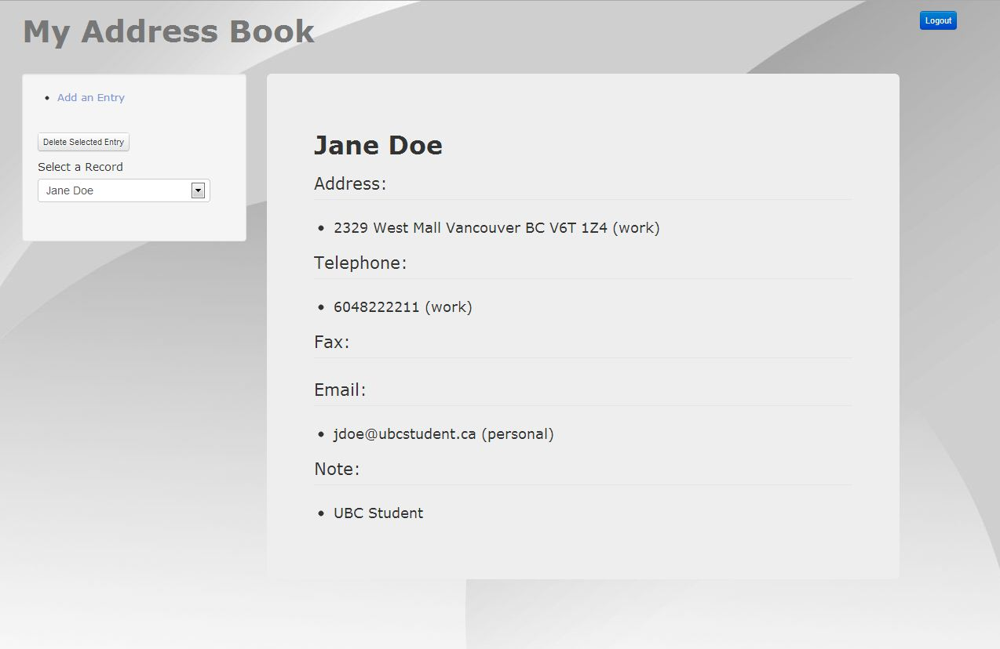
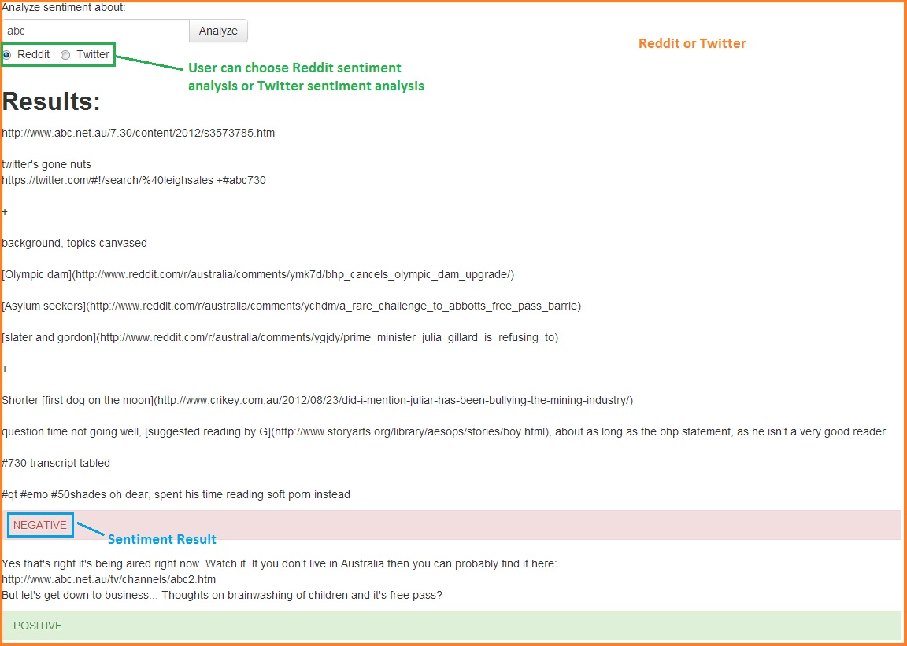
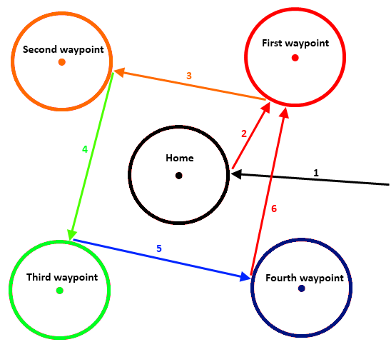
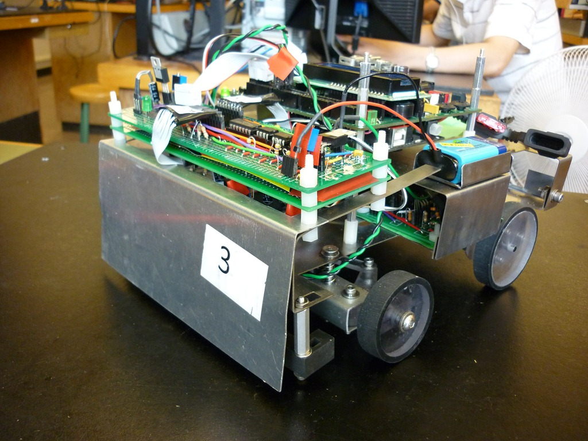

Projects
Address Book Application
A simple Addressbook app that will let the user add/view/delete contact info. This app was written in PHP on the back-end,
MySQL for database and Dojo toolkit for front-end. The source code is also available on github.
Link to application | Link to github

Sentiment Analysis Application
A Web application to analyze reddit and twitter posts based on their sentiment.
This is a collaboration project with Colin M Leung. Please visit www.colinmleung.com or github.com/colinmleung for the original code.
This app was written in PHP for the back-end and Dojo toolkit for the front-end.
Bootstrap Libary is used for its design. Please visit http://text-processing.com/docs/sentiment.html for more information on text-processing API used for this app.
Link to application | Link to github

High Altitude GPS Glider
A self-guiding autonomous GPS glider for BLAST high altitude telescope project.
The glider has ISM300F2-C4.1 GPS Module from Inventek Systems attached to a custom built circuit board, which feeds GPS information to the FEZ Mini Microcontroller.
Link to Project details | Link to final report | Link to presentation video

2010 Engineering Physics Robotics Competition: RoboRacers
A tape-following autonomous racing robot. This was a collaboration work with three other team members.
Link to Project | Link to Video
